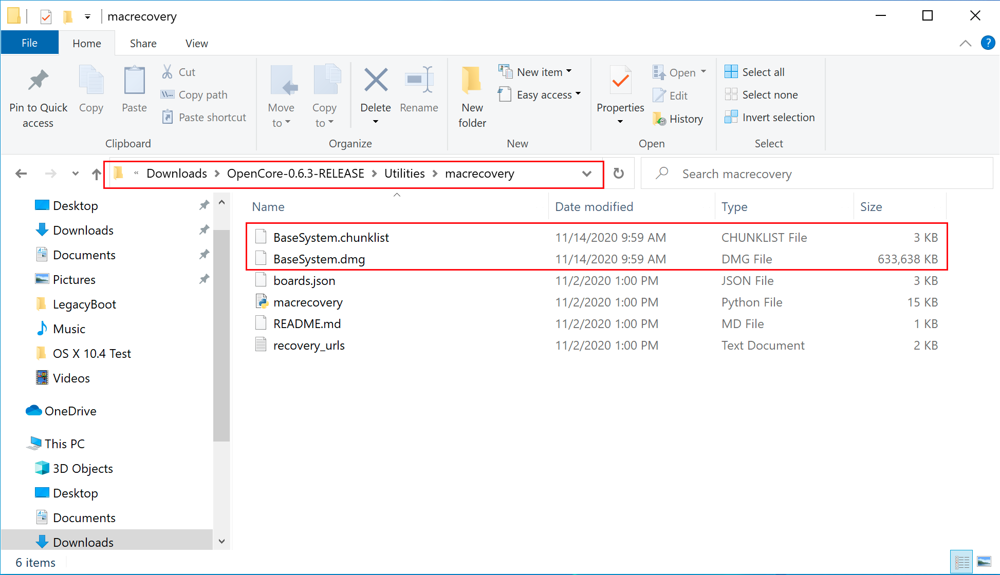

Descarga de macOS
Para agarrar instaladores heredados es súper fácil, primero coge una copia de OpenCorePkg y dirígete a
/Utilities/macrecovery/. A continuación, copia la ruta de la carpeta de la carpeta macrecovery:

Desde aquí, querrás abrir un símbolo del sistema y un cd en la carpeta macrecovery que copiamos
anteriormente:
Ahora ejecuta una de las siguientes opciones dependiendo de la versión de macOS que quieras
(tenga en cuenta que estos scripts dependen de Python (abre una nueva ventana), por favor,
instálelo si aún no lo ha hecho):
macOS 12, Monterrey Nota: Como este sistema operativo es bastante nuevo, todavía hay algunos
problemas con ciertos sistemas que resolver. Para obtener más información, consulta aquí:macOS 12:
Monterrey
-
Para los usuarios primerizos, recomendamos macOS Catalina (10.15) o Big Sur (11)
-
PRECAUCIÓN: Con macOS 11.3 y versiones posteriores, XhciPortLimit se rompe, lo que
provoca bucles de arranque (abre una nueva ventana). Recomendamos a los usuarios que
instalen un sistema operativo más antiguo (es decir, macOS 10.15, Catalina) o que
encuentren un instalador de Big Sur 11.2.3 o anterior
-
Para fines educativos, tenemos una copia proporcionada aquí: macOS 11.2.1 20D75 Imagen de
recuperación
Si ya has
asignado tus puertos USB tus puertos USB y desactivado
XhciPortLimit,
puedes arrancar macOS 11.3+ sin problemas
Esto llevará algún tiempo, sin embargo, una vez que hayas terminado deberías obtener archivos
BaseSystem o RecoveryImage:

BaseSystem

Recovery